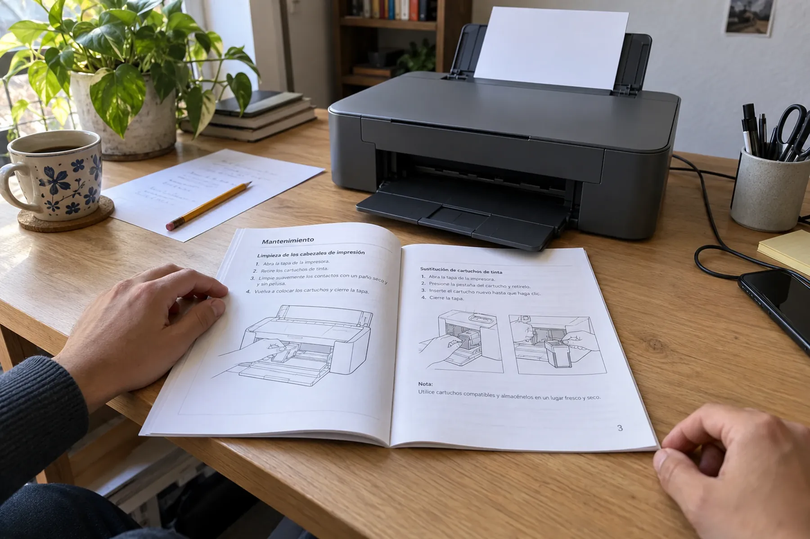
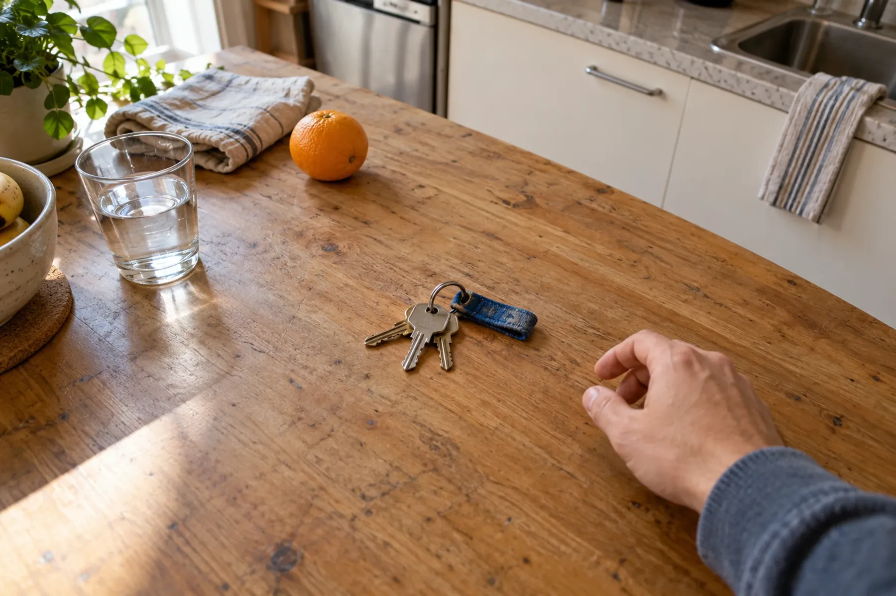
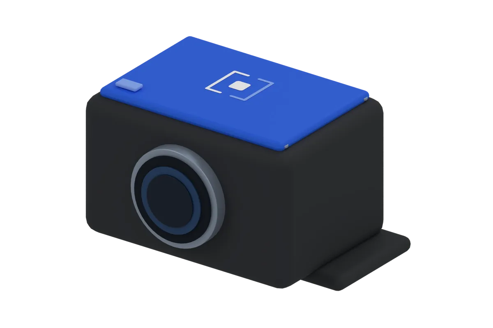
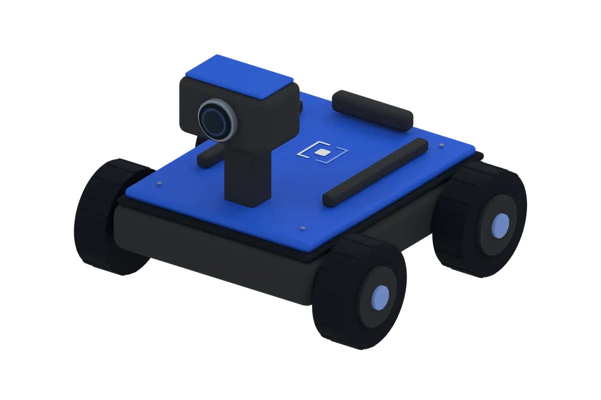
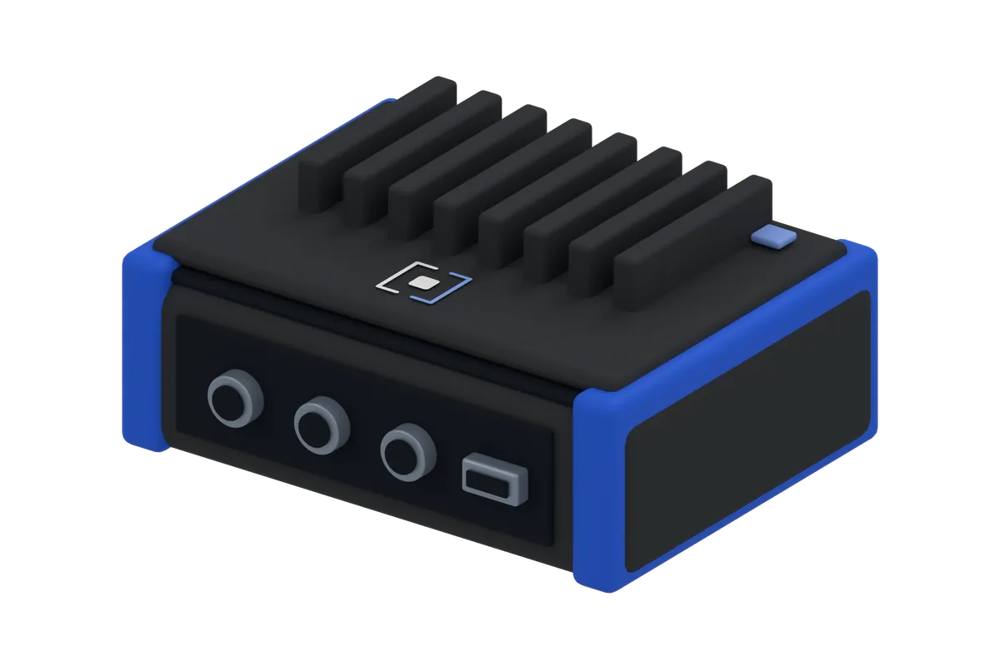
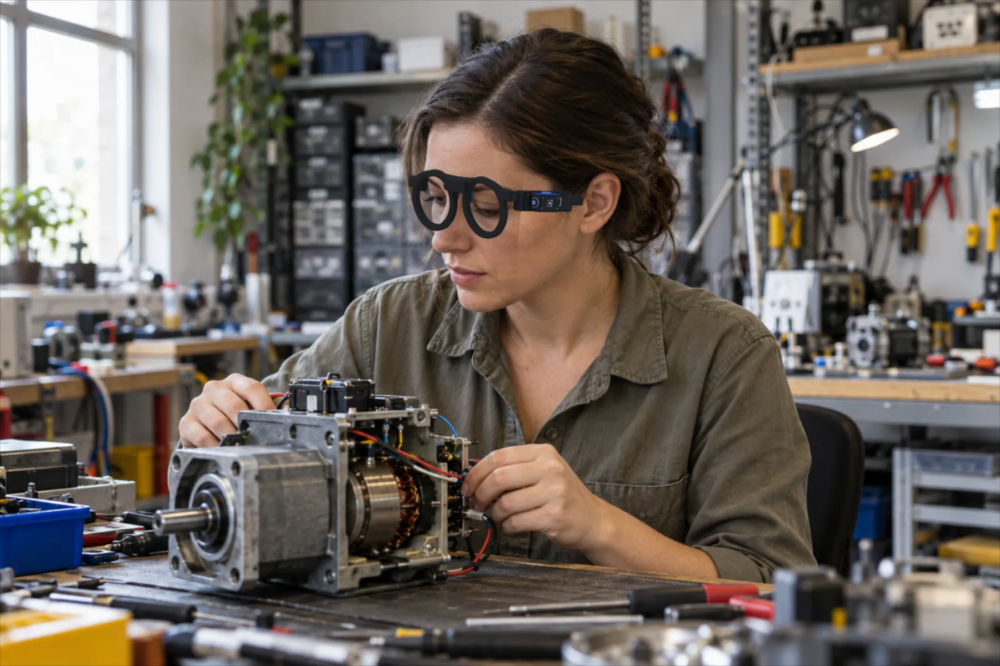
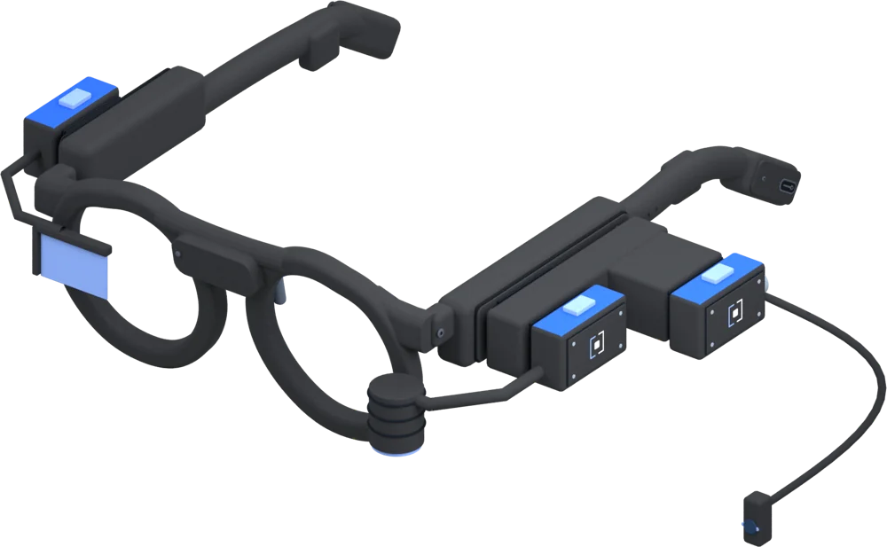

Tus ojos. Cualquier IA.
El Dev Kit de Alba Labs serán unos lentes abiertos con cámara para crear tus propias aplicaciones de visión e inteligencia artificial.
En desarrollo · todavía no está a la venta
Precio estimado: $5,900 MXN
 Ilustración
Ilustración
Ve. Recuerda. Actúa.
Una cámara, memoria y herramientas de inteligencia artificial en algo que llevas puesto y puedes modificar.

ImpresoraManual de la impresora · pág. 3
Llaves · mesa de la cocinaPregúntale al mundo que tienes enfrente.
Conecta modelos que corren en tu computadora o servicios de inteligencia artificial en la nube, según lo que necesites de privacidad, velocidad y costo.
- Privacidad
- Lo que ven los lentes se queda en tu red
- Velocidad
- Depende de tu computadora
- Costo
- Sin pagar por cada pregunta
- «¿Dónde dejé esta herramienta?»
- En el banco de trabajo, junto a la caja azul. La viste hace 12 minutos.
Mira lo que pasa entre ver y crear.
Por dentro no hay magia: una escena se convierte en un objeto, el objeto en contexto y el contexto en algo que tu aplicación puede usar.
El punto de partida es lo que ves.
Una imagen del entorno. Antes de responder, se elige qué parte importa.
Un objeto, no toda la escena.
El manual, sin perder su relación con la impresora que tiene enfrente.
El contexto le da sentido.
- Objeto
- Manual de la impresora
- Lugar
- Mesa de trabajo
- Referencia
- Página 3
Tu aplicación recibe una estructura.
{
"objeto": "manual",
"referencia": "pág. 3",
"lugar": "mesa de trabajo"
}Concepto · Ejemplo escrito a mano: no es reconocimiento en vivo ni el software final.
El primero del laboratorio.
Empezamos por los lentes. Todavía están en desarrollo: déjanos tu contacto y te avisamos cuando estén.
Ilustración
Smartglasses Dev Kit
Lentes con cámara para experimentar con visión artificial, asistentes que ven y escuchan, y memoria de contexto.
- Armazón con cámara
- Audio y micrófono para hablar con él
- Acceso al software y a la documentación
- Compatible con Hermes
$5,900MXN · precio estimado
Lo que viene en el laboratorio.
-

Módulo de cámara Edge
Cámara, cómputo e inferencia local para prototipos de visión y robótica.
Próximamente -

Alba Rover
Un robot educativo para aprender percepción, programación y autonomía.
Próximamente -

Vision Core
Un cerebro compacto para conectar cámaras, sensores y modelos de inteligencia artificial.
En desarrollo
Concepto · Ilustración. Son ideas en desarrollo: ni su forma ni sus funciones están definidas.
Hacia dónde vamos: unos lentes para trabajar.

Una base. Muchos módulos.
Hacia dónde va el laboratorio: unos lentes que se quedan y clips que se cambian según el trabajo. Elige uno y míralo acoplarse.
Concepto
Arrastra un módulo hasta los lentes, o tócalo.
Una base. Distintas formas de trabajar.
Con un adaptador, la base lleva tres módulos a la vez. Elige una forma de trabajar y mira cómo se arma.

ConceptoConcepto · Ilustración. Los módulos son posibilidades que estamos explorando: ni su forma ni su funcionamiento están validados.
La misma base, con propósito.
Sobre la misma base construimos UNBLIND, tecnología para ver por quien no ve. Y estamos diseñando lentes industriales para mantenimiento, inspección y documentación; por ahora van como piloto bajo pedido.
Una aplicación para los lentes
- IdeaUna escena y una intención concreta.
- ExperimentoUna receta de ejemplo y una respuesta que puedas revisar.
- PruebaComprobar que el contexto ayuda en una tarea.
Se abre WhatsApp con tu idea ya escrita; tú decides si la mandas. Es para platicarla: el Dev Kit todavía no existe.
Construye algo que aún no existe.
Pide que te avisemos del Dev Kit, colabora con Alba Labs o lleva la plataforma a tu universidad.